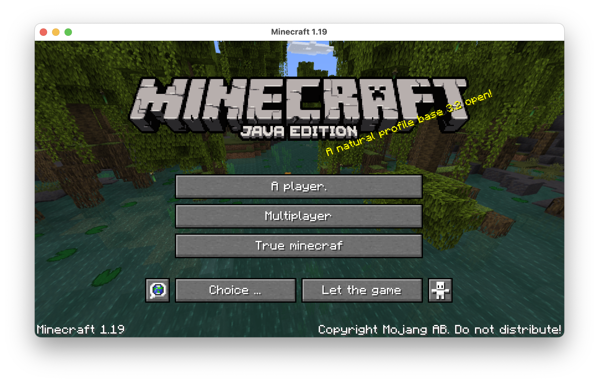

"Three Kingdoms Minecraft"
Inspired by DutChen18, I created two Google Translate resource packs for Minecraft Java Edition 1.14. All text in the game has been translated, including the splash texts, the end poem, and the game's credits.
There are two packs available: a 10x translation and a 30x translation.
To get around Google's IP tempban (which they impose if you spam the translation URL too much), I created a
Google Spreadsheet which performs the translations using the GOOGLETRANSLATE() call. Then, I
wrote a program which takes the JSON langauge file and converts it to a CSV. I pasted
the CSV's cells into the spreadsheet and waited until the next day. After downloading the results as a CSV,
I wrote a second program to convert the CSV back to JSON.
Unlike DutChen18 I didn't think to pre-process the %s / %1$s special tokens in the
language file before dumping as a CSV, so I had to fix those manually. If anything is broken,
please tell me (comment on the reddit thread) so I can fix it.
If you want to mess around with translation telephone, I made a webpage which lets you do that easily. You can visit it here: Hypertranslate. Note that if you use this too much Google will temporarily block your IP (since it runs clientside) and it will stop working.
How to use
- Place the .zip files inside
minecraft/resourcepacksand extract them. - Open Minecraft, select Options > Resource Packs, and enable the resource pack you want to use.
- Return to the Options menu, select Language, then find Google Translate in the list and select it.
- Return to the menu. The text should be changed.
Download 10x pack
Download 30x pack
